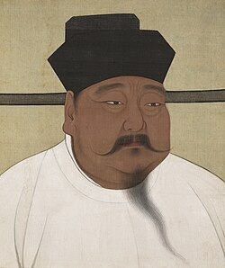
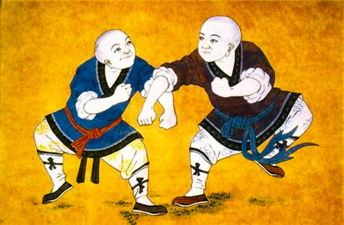
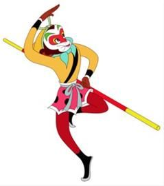
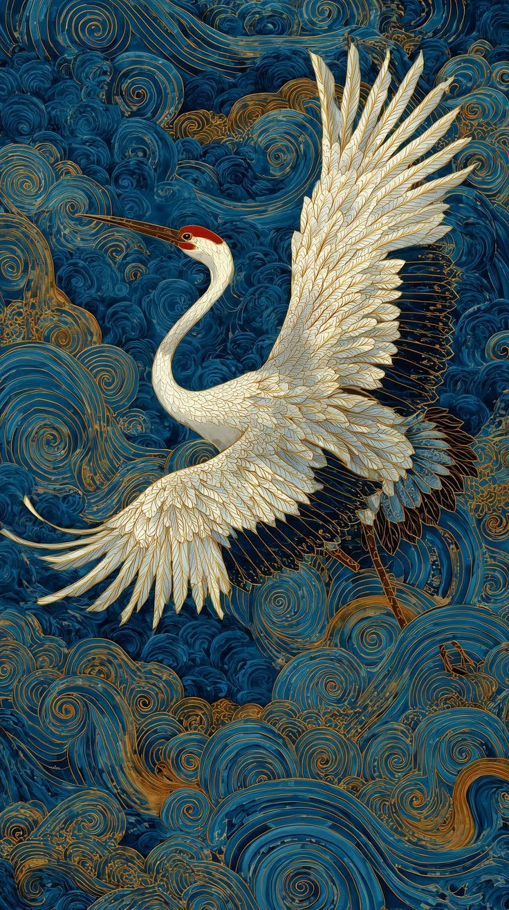
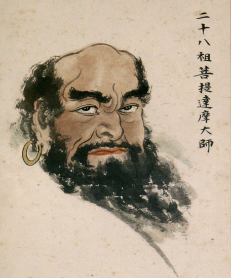

五祖拳 · Quest for Truth
You stand on the sea-crossing Luoyang Bridge in Southern China with a thousand-year history. Below, the waves that once carried diasporic merchant ships and Buddhist mysteries now carry your quest of a kungfu legend. Five paths diverge from here — five ancestors await in the ancient city.


太祖 Taizu
罗汉 Luohan
猴拳 Monkey
白鹤 White Crane
达尊 Da ZunChoose your path · 泉州
Select an ancestor to begin.